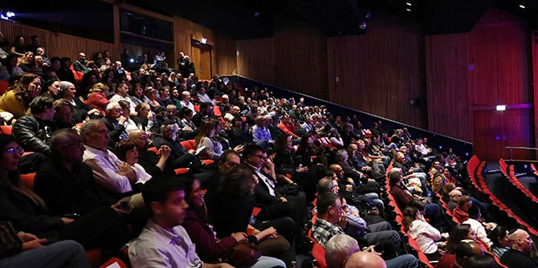

Violinist Irina Shklyar at the premiere of the documentary "Mandel" (Photo: Sivan Faraj)
Members of the extended Mandel community in Israel gathered at MUZA – Eretz Israel Museum in Tel Aviv in late February for the premiere screening of “Mandel” – a documentary about the life, work, and vision of
Morton L. Mandel, founder and first chairman and CEO of the Mandel Foundation. The inspiring film incorporates interviews with Morton Mandel’s colleagues and the leadership of the Mandel Foundation, archival footage, reminiscences of graduates of the Mandel leadership programs in Israel, and vignettes illustrating the impact of Mandel graduates in the field.
Left to Right: Film director Gilad Tocatly, Steve Hoffman, Tel Aviv Mayor Ron Huldai, Professor Jehuda Reinharz, and Moshe Vigdor (Photo: Sivan Faraj)
The festive event was attended by
Professor Jehuda Reinharz, president and CEO of the Mandel Foundation;
Stephen Hoffman, chairman of the Mandel Foundation;
Moshe Vigdor, director general of the Mandel Foundation–Israel;
Gilad Tocatly, director of the film; members of Knesset, former ministers, mayors, heads of government authorities, and officials from Israel's leading universities; and faculty, staff, fellows, and graduates of the Mandel Foundation–Israel. The evening was organized and emceed by
Gila Ben Har, who accompanied the production of the film on behalf of the Foundation.

A full house at the premiere (Photo: Sivan Faraj)
Prior to the screening of the movie, Mandel Foundation president and CEO Professor Jehuda Reinharz and film director Gilad Tocatly addressed the audience, and Stephen Hoffman, chairman of the Mandel Foundation, closed the evening.
Watch the feature-length film here or on the YouTube channel of the Mandel Foundation–Israel:
{kind=link}
{kind=link}
{kind=link}